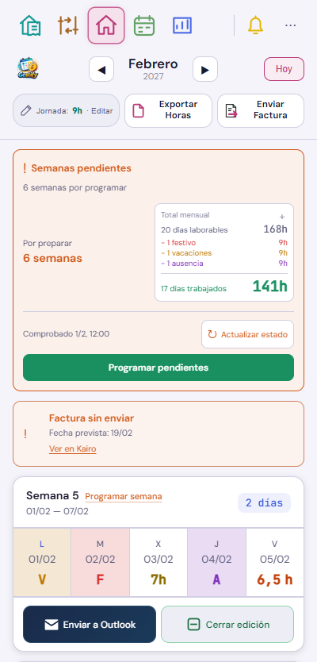
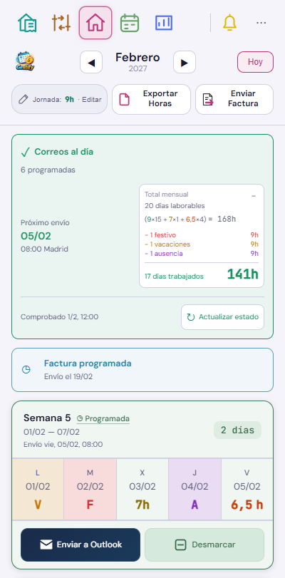

Correos al día y pendientes



Interfaz real de v516, con datos ficticios y sin acceso al buzón. El resumen permanece a la derecha; las tarjetas conservan sus tres zonas, el envío manual y Desmarcar.
Cambiar de mes o volver a la app conserva lo confirmado. Actualizar estado comprueba correos y factura cuando lo solicitas. Los trabajos aceptados continúan en Kairo aunque cierres Gestify.




7 h usa amarillo oscuro; 6,5 h conserva el naranja. Los mismos colores aparecen al editar la jornada. V, F y A mantienen su significado y sombrean la celda completa.
Pruebas de navegación, recarga, pérdida de conexión, cierre y recuperación del trabajo, programación individual y conjunta, actualizaciones del mismo correo, duplicados y horas de Madrid. La prueba del escritor utiliza un navegador separado y sin red.
La lectura real en Kairo respondió inicialmente en 38 ms, terminó la auditoría de tres meses en 27 segundos y recuperó después el resultado guardado en 3 ms. Esta validación no programó ni envió correos.
El atlas actualiza solo Inicio, septiembre y octubre; conserva las otras 170 referencias y sus revisiones. Las capturas nuevas quedan disponibles para revisión visual.